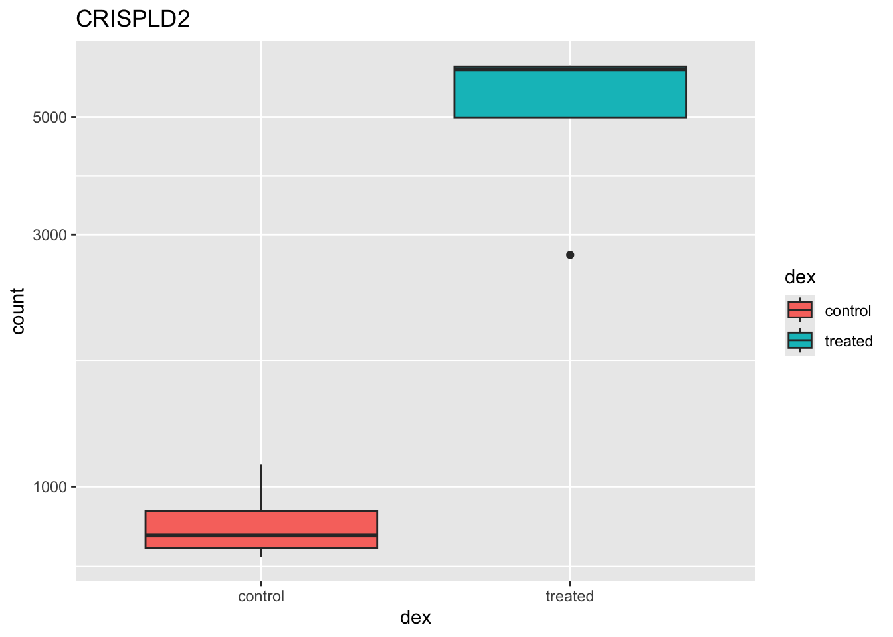
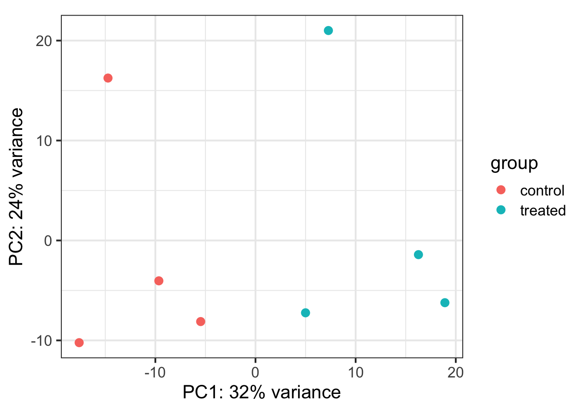

12 Count-Based Differential Expression Analysis of RNA-seq Data
This is an introduction to RNAseq analysis involving reading in quantitated gene expression data from an RNA-seq experiment, exploring the data using base R functions and then analysis with the DESeq2 package.
Recommended reading:
- Conesa et al. A survey of best practices for RNA-seq data analysis. Genome Biology 17:13 (2016).
- Soneson et al. “Differential analyses for RNA-seq: transcript-level estimates improve gene-level inferences.” F1000Research 4 (2015).
- Abstract and introduction sections of Himes et al. “RNA-Seq transcriptome profiling identifies CRISPLD2 as a glucocorticoid responsive gene that modulates cytokine function in airway smooth muscle cells.” PLoS ONE 9.6 (2014): e99625.
- Review the Introduction (10.1), Tibbles vs. data.frame (10.3), and Interacting with Older Code (10.4) sections of the R for Data Science book. We will initially be using the
read_*functions from the readr package. These functions load data into a tibble instead of R’s traditional data.frame. Tibbles are data frames, but they tweak some older behaviors to make life a little easier. These sections explain the few key small differences between traditional data.frames and tibbles.
Data needed:
- Length-scaled count matrix (i.e.,
countData): airway_scaledcounts.csv - Sample metadata (i.e.,
colData): airway_metadata.csv - Gene Annotation data: annotables_grch38.csv
12.1 Background
12.1.1 The biology
The data for this chapter comes from:
Himes et al. “RNA-Seq Transcriptome Profiling Identifies CRISPLD2 as a Glucocorticoid Responsive Gene that Modulates Cytokine Function in Airway Smooth Muscle Cells.” PLoS ONE. 2014 Jun 13;9(6):e99625. PMID: 24926665.
Glucocorticoids are potent inhibitors of inflammatory processes, and are widely used to treat asthma because of their anti-inflammatory effects on airway smooth muscle (ASM) cells. But what’s the molecular mechanism? This study used RNA-seq to profile gene expression changes in four different ASM cell lines treated with dexamethasone, a synthetic glucocorticoid molecule. They found a number of differentially expressed genes comparing dexamethasone-treated ASM cells to control cells, but focus much of the discussion on a gene called CRISPLD2. This gene encodes a secreted protein known to be involved in lung development, and SNPs in this gene in previous GWAS studies are associated with inhaled corticosteroid resistance and bronchodilator response in asthma patients. They confirmed the upregulated CRISPLD2 mRNA expression with qPCR and increased protein expression using Western blotting.
They did their analysis using Tophat and Cufflinks. We’re taking a different approach and using an R package called DESeq2. Click here to read more on DESeq2 and other approaches.
12.1.2 Data pre-processing
Analyzing an RNAseq experiment begins with sequencing reads. There are many ways to begin analyzing this data, and you should check out the three papers below to get a sense of other analysis strategies. In the workflow we’ll use here, sequencing reads were pseudoaligned to a reference transcriptome and the abundance of each transcript quantified using kallisto (software, paper). Transcript-level abundance estimates were then summarized to the gene level to produce length-scaled counts using txImport (software, paper), suitable for using in count-based analysis tools like DESeq. This is the starting point - a “count matrix,” where each cell indicates the number of reads mapping to a particular gene (in rows) for each sample (in columns). This is one of several potential workflows, and relies on having a well-annotated reference transcriptome. However, there are many well-established alternative analysis paths, and the goal here is to provide a reference point to acquire fundamental skills that will be applicable to other bioinformatics tools and workflows.
- Conesa, A. et al. “A survey of best practices for RNA-seq data analysis.” Genome Biology 17:13 (2016).
- Soneson, C., Love, M. I. & Robinson, M. D. “Differential analyses for RNA-seq: transcript-level estimates improve gene-level inferences.” F1000Res. 4:1521 (2016).
- Griffith, Malachi, et al. “Informatics for RNA sequencing: a web resource for analysis on the cloud.” PLoS Comput Biol 11.8: e1004393 (2015).
This data was downloaded from GEO (GSE:GSE52778). You can read more about how the data was processed by going over the slides. If you’d like to see the code used for the upstream pre-processing with kallisto and txImport, see the code.
12.1.3 Data structure
We’ll come back to this again later, but the data at our starting point looks like this (note: this is a generic schematic - our genes are not actually geneA and geneB, and our samples aren’t called ctrl_1, ctrl_2, etc.):

That is, we have two tables:
- The “count matrix” (called the
countDatain DESeq-speak) – where genes are in rows and samples are in columns, and the number in each cell is the number of reads that mapped to exons in that gene for that sample: airway_scaledcounts.csv. - The sample metadata (called the
colDatain DESeq-speak) – where samples are in rows and metadata about those samples are in columns: airway_metadata.csv. It’s called thecolDatabecause this table supplies metadata/information about the columns of thecountDatamatrix. Notice that the first column ofcolDatamust match the column names ofcountData(except the first, which is the gene ID column).1
12.2 Import data
First, let’s load the readr, dplyr, and ggplot2 packages. Then let’s import our data with readr’s read_csv() function (note: not read.csv()). Let’s read in the actual count data and the experimental metadata.
Now, take a look at each.
mycounts# A tibble: 38,694 × 9
ensgene SRR1039508 SRR1039509 SRR1039512 SRR1039513 SRR1039516 SRR1039517
<chr> <dbl> <dbl> <dbl> <dbl> <dbl> <dbl>
1 ENSG000000… 723 486 904 445 1170 1097
2 ENSG000000… 0 0 0 0 0 0
3 ENSG000000… 467 523 616 371 582 781
4 ENSG000000… 347 258 364 237 318 447
5 ENSG000000… 96 81 73 66 118 94
6 ENSG000000… 0 0 1 0 2 0
7 ENSG000000… 3413 3916 6000 4308 6424 10723
8 ENSG000000… 2328 1714 2640 1381 2165 2262
9 ENSG000000… 670 372 692 448 917 807
10 ENSG000000… 426 295 531 178 740 651
# ℹ 38,684 more rows
# ℹ 2 more variables: SRR1039520 <dbl>, SRR1039521 <dbl>metadata# A tibble: 8 × 4
id dex celltype geo_id
<chr> <chr> <chr> <chr>
1 SRR1039508 control N61311 GSM1275862
2 SRR1039509 treated N61311 GSM1275863
3 SRR1039512 control N052611 GSM1275866
4 SRR1039513 treated N052611 GSM1275867
5 SRR1039516 control N080611 GSM1275870
6 SRR1039517 treated N080611 GSM1275871
7 SRR1039520 control N061011 GSM1275874
8 SRR1039521 treated N061011 GSM1275875Notice something here. The sample IDs in the metadata sheet (SRR1039508, SRR1039509, etc.) exactly match the column names of the countdata, except for the first column, which contains the Ensembl gene ID. This is important, and we’ll get more strict about it later on.
12.3 Poor man’s DGE
Let’s look for differential gene expression. Note: this analysis is for demonstration only. NEVER do differential expression analysis this way!
Let’s start with an exercise.
We can find candidate differentially expressed genes by looking for genes with a large change between control and dex-treated samples. We usually look at the \(log_2\) of the fold change, because this has better mathematical properties. On the absolute scale, upregulation goes from 1 to infinity, while downregulation is bounded by 0 and 1. On the log scale, upregulation goes from 0 to infinity, and downregulation goes from 0 to negative infinity. So, let’s mutate our meancounts object to add a log2foldchange column. Optionally pipe this to View().
# A tibble: 38,694 × 4
ensgene controlmean treatedmean log2fc
<chr> <dbl> <dbl> <dbl>
1 ENSG00000000003 901. 658 -0.453
2 ENSG00000000005 0 0 NaN
3 ENSG00000000419 520. 546 0.0690
4 ENSG00000000457 340. 316. -0.102
5 ENSG00000000460 97.2 78.8 -0.304
6 ENSG00000000938 0.75 0 -Inf
7 ENSG00000000971 5219 6688. 0.358
8 ENSG00000001036 2327 1786. -0.382
9 ENSG00000001084 756. 578 -0.387
10 ENSG00000001167 528. 348. -0.600
# ℹ 38,684 more rowsThere are a couple of “weird” results. Namely, the NaN (“not a number”) and -Inf (negative infinity) results. The NaN is returned when you divide by zero and try to take the log. The -Inf is returned when you try to take the log of zero. It turns out that there are a lot of genes with zero expression. Let’s filter our meancounts data, mutate it to add the \(log_2(Fold Change)\), and when we’re happy with what we see, let’s reassign the result of that operation back to the meancounts object. (Note: this is destructive. If you’re coding interactively like we’re doing now, before you do this it’s good practice to see what the result of the operation is prior to making the reassignment.)
# Try running the code first, prior to reassigning.
meancounts <- meancounts |>
filter(controlmean>0 & treatedmean>0) |>
mutate(log2fc=log2(treatedmean/controlmean))
meancounts# A tibble: 21,817 × 4
ensgene controlmean treatedmean log2fc
<chr> <dbl> <dbl> <dbl>
1 ENSG00000000003 901. 658 -0.453
2 ENSG00000000419 520. 546 0.0690
3 ENSG00000000457 340. 316. -0.102
4 ENSG00000000460 97.2 78.8 -0.304
5 ENSG00000000971 5219 6688. 0.358
6 ENSG00000001036 2327 1786. -0.382
7 ENSG00000001084 756. 578 -0.387
8 ENSG00000001167 528. 348. -0.600
9 ENSG00000001460 227. 186. -0.290
10 ENSG00000001461 3170. 2701. -0.231
# ℹ 21,807 more rowsA common threshold used for calling something differentially expressed is a \(log_2(FoldChange)\) of greater than 2 or less than -2. Let’s filter the dataset both ways to see how many genes are up or down-regulated.
meancounts |> filter(log2fc>2)# A tibble: 250 × 4
ensgene controlmean treatedmean log2fc
<chr> <dbl> <dbl> <dbl>
1 ENSG00000004799 270. 1429. 2.40
2 ENSG00000006788 2.75 19.8 2.84
3 ENSG00000008438 0.5 2.75 2.46
4 ENSG00000011677 0.5 2.25 2.17
5 ENSG00000015413 0.5 3 2.58
6 ENSG00000015592 0.5 2.25 2.17
7 ENSG00000046653 323 2126. 2.72
8 ENSG00000070190 0.5 3 2.58
9 ENSG00000070388 3.5 17.5 2.32
10 ENSG00000074317 0.25 1.75 2.81
# ℹ 240 more rowsmeancounts |> filter(log2fc<(-2))# A tibble: 367 × 4
ensgene controlmean treatedmean log2fc
<chr> <dbl> <dbl> <dbl>
1 ENSG00000015520 32 6 -2.42
2 ENSG00000019186 26.5 1.75 -3.92
3 ENSG00000025423 295 54.2 -2.44
4 ENSG00000028277 88.2 22 -2.00
5 ENSG00000029559 1.25 0.25 -2.32
6 ENSG00000049246 405 93 -2.12
7 ENSG00000049247 1.25 0.25 -2.32
8 ENSG00000052344 2.25 0.25 -3.17
9 ENSG00000054179 3 0.25 -3.58
10 ENSG00000064201 30 6.5 -2.21
# ℹ 357 more rows12.4 DESeq2 analysis
12.4.1 DESeq2 package
Let’s do this the right way. DESeq2 is an R package for analyzing count-based NGS data like RNA-seq. It is available from Bioconductor. Bioconductor is a project to provide tools for analysing high-throughput genomic data including RNA-seq, ChIP-seq and arrays. You can explore Bioconductor packages here.
Bioconductor packages usually have great documentation in the form of vignettes. For a great example, take a look at the DESeq2 vignette for analyzing count data. This 40+ page manual is packed full of examples on using DESeq2, importing data, fitting models, creating visualizations, references, etc.
Just like R packages from CRAN, you only need to install Bioconductor packages once (instructions here), then load them every time you start a new R session.
Take a second and read through all the stuff that flies by the screen when you load the DESeq2 package. When you first installed DESeq2 it may have taken a while, because DESeq2 depends on a number of other R packages (S4Vectors, BiocGenerics, parallel, IRanges, etc.) Each of these, in turn, may depend on other packages. These are all loaded into your working environment when you load DESeq2. Also notice the lines that start with The following objects are masked from 'package:.... One example of this is the rename() function from the dplyr package. When the S4Vectors package was loaded, it loaded it’s own function called rename(). Now, if you wanted to use dplyr’s rename function, you’ll have to call it explicitly using this kind of syntax: dplyr::rename(). See this Q&A thread for more.
12.4.2 Importing data
DESeq works on a particular type of object called a DESeqDataSet. The DESeqDataSet is a single object that contains input values, intermediate calculations like how things are normalized, and all results of a differential expression analysis. You can construct a DESeqDataSet from a count matrix, a metadata file, and a formula indicating the design of the experiment. See the help for ?DESeqDataSetFromMatrix. If you read through the DESeq2 vignette you’ll read about the structure of the data that you need to construct a DESeqDataSet object.
DESeqDataSetFromMatrix requires the count matrix (countData argument) to be a matrix or numeric data frame. either the row names or the first column of the countData must be the identifier you’ll use for each gene. The column names of countData are the sample IDs, and they must match the row names of colData (or the first column when tidy=TRUE). colData is an additional dataframe describing sample metadata. Both colData and countData must be regular data.frame objects – they can’t have the special tbl class wrapper created when importing with readr::read_*.
Let’s look at our mycounts and metadata again.
mycounts# A tibble: 38,694 × 9
ensgene SRR1039508 SRR1039509 SRR1039512 SRR1039513 SRR1039516 SRR1039517
<chr> <dbl> <dbl> <dbl> <dbl> <dbl> <dbl>
1 ENSG000000… 723 486 904 445 1170 1097
2 ENSG000000… 0 0 0 0 0 0
3 ENSG000000… 467 523 616 371 582 781
4 ENSG000000… 347 258 364 237 318 447
5 ENSG000000… 96 81 73 66 118 94
6 ENSG000000… 0 0 1 0 2 0
7 ENSG000000… 3413 3916 6000 4308 6424 10723
8 ENSG000000… 2328 1714 2640 1381 2165 2262
9 ENSG000000… 670 372 692 448 917 807
10 ENSG000000… 426 295 531 178 740 651
# ℹ 38,684 more rows
# ℹ 2 more variables: SRR1039520 <dbl>, SRR1039521 <dbl>metadata# A tibble: 8 × 4
id dex celltype geo_id
<chr> <chr> <chr> <chr>
1 SRR1039508 control N61311 GSM1275862
2 SRR1039509 treated N61311 GSM1275863
3 SRR1039512 control N052611 GSM1275866
4 SRR1039513 treated N052611 GSM1275867
5 SRR1039516 control N080611 GSM1275870
6 SRR1039517 treated N080611 GSM1275871
7 SRR1039520 control N061011 GSM1275874
8 SRR1039521 treated N061011 GSM1275875class(mycounts)[1] "spec_tbl_df" "tbl_df" "tbl" "data.frame" class(metadata)[1] "spec_tbl_df" "tbl_df" "tbl" "data.frame" Remember, we read in our count data and our metadata using read_csv() which read them in as those “special” dplyr data frames / tbls. We’ll need to convert them back to regular data frames for them to work well with DESeq2.
mycounts <- as.data.frame(mycounts)
metadata <- as.data.frame(metadata)
head(mycounts)
head(metadata)
class(mycounts)
class(metadata)Let’s check that the column names of our count data (except the first, which is ensgene) are the same as the IDs from our colData.
names(mycounts)[-1][1] "SRR1039508" "SRR1039509" "SRR1039512" "SRR1039513" "SRR1039516"
[6] "SRR1039517" "SRR1039520" "SRR1039521"metadata$id[1] "SRR1039508" "SRR1039509" "SRR1039512" "SRR1039513" "SRR1039516"
[6] "SRR1039517" "SRR1039520" "SRR1039521"names(mycounts)[-1]==metadata$id[1] TRUE TRUE TRUE TRUE TRUE TRUE TRUE TRUE[1] TRUENow we can move on to constructing the actual DESeqDataSet object. The last thing we’ll need to specify is a design – a formula which expresses how the counts for each gene depend on the variables in colData. Take a look at metadata again. The thing we’re interested in is the dex column, which tells us which samples are treated with dexamethasone versus which samples are untreated controls. We’ll specify the design with a tilde, like this: design=~dex. (The tilde is the shifted key to the left of the number 1 key on my keyboard. It looks like a little squiggly line). So let’s contruct the object and call it dds, short for our DESeqDataSet. If you get a warning about “some variables in design formula are characters, converting to factors” don’t worry about it. Take a look at the dds object once you create it.
dds <- DESeqDataSetFromMatrix(countData=mycounts,
colData=metadata,
design=~dex,
tidy=TRUE)
ddsclass: DESeqDataSet
dim: 38694 8
metadata(1): version
assays(1): counts
rownames(38694): ENSG00000000003 ENSG00000000005 ... ENSG00000283120
ENSG00000283123
rowData names(0):
colnames(8): SRR1039508 SRR1039509 ... SRR1039520 SRR1039521
colData names(4): id dex celltype geo_id12.4.3 DESeq pipeline
Next, let’s run the DESeq pipeline on the dataset, and reassign the resulting object back to the same variable. Before we start, dds is a bare-bones DESeqDataSet. The DESeq() function takes a DESeqDataSet and returns a DESeqDataSet, but with lots of other information filled in (normalization, dispersion estimates, differential expression results, etc). Notice how if we try to access these objects before running the analysis, nothing exists.
sizeFactors(dds)NULLdispersions(dds)NULLresults(dds)Error in results(dds): couldn't find results. you should first run DESeq()Here, we’re running the DESeq pipeline on the dds object, and reassigning the whole thing back to dds, which will now be a DESeqDataSet populated with all those values. Get some help on ?DESeq (notice, no “2” on the end). This function calls a number of other functions within the package to essentially run the entire pipeline (normalizing by library size by estimating the “size factors,” estimating dispersion for the negative binomial model, and fitting models and getting statistics for each gene for the design specified when you imported the data).
dds <- DESeq(dds)12.4.4 Getting results
Since we’ve got a fairly simple design (single factor, two groups, treated versus control), we can get results out of the object simply by calling the results() function on the DESeqDataSet that has been run through the pipeline. The help page for ?results and the vignette both have extensive documentation about how to pull out the results for more complicated models (multi-factor experiments, specific contrasts, interaction terms, time courses, etc.).
Note two things:
- We’re passing the
tidy=TRUEargument, which tells DESeq2 to output the results table with rownames as a first column called ‘row.’ If we didn’t do this, the gene names would be stuck in the row.names, and we’d have a hard time filtering or otherwise using that column. - This returns a regular old data frame. Try displaying it to the screen by just typing
res. You’ll see that it doesn’t print as nicly as the data we read in withread_csv. We can add this “special” attribute to the raw data returned which just tells R to print it nicely.
# A tibble: 38,694 × 7
row baseMean log2FoldChange lfcSE stat pvalue padj
<chr> <dbl> <dbl> <dbl> <dbl> <dbl> <dbl>
1 ENSG00000000003 747. -0.351 0.168 -2.08 0.0371 0.163
2 ENSG00000000005 0 NA NA NA NA NA
3 ENSG00000000419 520. 0.206 0.101 2.04 0.0414 0.176
4 ENSG00000000457 323. 0.0245 0.145 0.169 0.866 0.962
5 ENSG00000000460 87.7 -0.147 0.257 -0.573 0.567 0.816
6 ENSG00000000938 0.319 -1.73 3.49 -0.496 0.620 NA
7 ENSG00000000971 5760. 0.459 0.234 1.96 0.0500 0.201
8 ENSG00000001036 2025. -0.228 0.125 -1.83 0.0679 0.247
9 ENSG00000001084 652. -0.253 0.203 -1.25 0.212 0.495
10 ENSG00000001167 412. -0.534 0.229 -2.33 0.0197 0.105
# ℹ 38,684 more rowsEither click on the res object in the environment pane or pass it to View() to bring it up in a data viewer. Why do you think so many of the adjusted p-values are missing (NA)? Try looking at the baseMean column, which tells you the average overall expression of this gene, and how that relates to whether or not the p-value was missing. Go to the DESeq2 vignette and read the section about “Independent filtering and multiple testing.”
The goal of independent filtering is to filter out those tests from the procedure that have no, or little chance of showing significant evidence, without even looking at the statistical result. Genes with very low counts are not likely to see significant differences typically due to high dispersion. This results in increased detection power at the same experiment-wide type I error [i.e., better FDRs].
12.5 Data Visualization
12.5.1 Plotting counts
DESeq2 offers a function called plotCounts() that takes a DESeqDataSet that has been run through the pipeline, the name of a gene, and the name of the variable in the colData that you’re interested in, and plots those values. See the help for ?plotCounts. Let’s first see what the gene ID is for the CRISPLD2 gene using res |> filter(symbol=="CRISPLD2"). Now, let’s plot the counts, where our intgroup, or “interesting group” variable is the “dex” column.
plotCounts(dds, gene="ENSG00000103196", intgroup="dex")That’s just okay. Keep looking at the help for ?plotCounts. Notice that we could have actually returned the data instead of plotting. We could then pipe this to ggplot and make our own figure. Let’s make a boxplot.
# Return the data
plotCounts(dds, gene="ENSG00000103196", intgroup="dex", returnData=TRUE) count dex
SRR1039508 774.5002 control
SRR1039509 6258.7915 treated
SRR1039512 1100.2741 control
SRR1039513 6093.0324 treated
SRR1039516 736.9483 control
SRR1039517 2742.1908 treated
SRR1039520 842.5452 control
SRR1039521 6224.9923 treated# Plot it
plotCounts(dds, gene="ENSG00000103196", intgroup="dex", returnData=TRUE) |>
ggplot(aes(dex, count)) + geom_boxplot(aes(fill=dex)) + scale_y_log10() + ggtitle("CRISPLD2")
12.5.2 MA & Volcano plots
Let’s make some commonly produced visualizations from this data. First, let’s mutate our results object to add a column called sig that evaluates to TRUE if padj<0.05, and FALSE if not, and NA if padj is also NA.
12.5.3 Transformation
To test for differential expression we operate on raw counts. But for other downstream analyses like heatmaps, PCA, or clustering, we need to work with transformed versions of the data, because it’s not clear how to best compute a distance metric on untransformed counts. The go-to choice might be a log transformation. But because many samples have a zero count (and \(log(0)=-\infty\), you might try using pseudocounts, i. e. \(y = log(n + 1)\) or more generally, \(y = log(n + n_0)\), where \(n\) represents the count values and \(n_0\) is some positive constant.
But there are other approaches that offer better theoretical justification and a rational way of choosing the parameter equivalent to \(n_0\), and they produce transformed data on the log scale that’s normalized to library size. One is called a variance stabilizing transformation (VST), and it also removes the dependence of the variance on the mean, particularly the high variance of the log counts when the mean is low.
vsdata <- vst(dds, blind=FALSE)12.5.4 PCA
Let’s do some exploratory plotting of the data using principal components analysis on the variance stabilized data from above. Let’s use the DESeq2-provided plotPCA function. See the help for ?plotPCA and notice that it also has a returnData option, just like plotCounts.
plotPCA(vsdata, intgroup="dex")
Principal Components Analysis (PCA) is a dimension reduction and visualization technique that is here used to project the multivariate data vector of each sample into a two-dimensional plot, such that the spatial arrangement of the points in the plot reflects the overall data (dis)similarity between the samples. In essence, principal component analysis distills all the global variation between samples down to a few variables called principal components. The majority of variation between the samples can be summarized by the first principal component, which is shown on the x-axis. The second principal component summarizes the residual variation that isn’t explained by PC1. PC2 is shown on the y-axis. The percentage of the global variation explained by each principal component is given in the axis labels. In a two-condition scenario (e.g., mutant vs WT, or treated vs control), you might expect PC1 to separate the two experimental conditions, so for example, having all the controls on the left and all experimental samples on the right (or vice versa - the units and directionality isn’t important). The secondary axis may separate other aspects of the design - cell line, time point, etc. Very often the experimental design is reflected in the PCA plot, and in this case, it is. But this kind of diagnostic can be useful for finding outliers, investigating batch effects, finding sample swaps, and other technical problems with the data. This YouTube video from the Genetics Department at UNC gives a very accessible explanation of what PCA is all about in the context of a gene expression experiment, without the need for an advanced math background. Take a look.
12.5.5 Bonus: Heatmaps
Heatmaps are complicated, and are often poorly understood. It’s a type of visualization used very often in high-throughput biology where data are clustered on rows and columns, and the actual data is displayed as tiles on a grid, where the values are mapped to some color spectrum. Our R useRs group MeetUp had a session on making heatmaps, which I summarized in this blog post. Take a look at the code from that meetup, and the documentation for the aheatmap function in the NMF package to see if you can re-create this image. Here, I’m clustering all samples using the top 25 most differentially regulated genes, labeling the rows with the gene symbol, and putting two annotation color bars across the top of the main heatmap panel showing treatment and cell line annotations from our metadata.
12.6 Record sessionInfo()
The sessionInfo() prints version information about R and any attached packages. It’s a good practice to always run this command at the end of your R session and record it for the sake of reproducibility in the future.
R version 4.4.1 (2024-06-14)
Platform: aarch64-apple-darwin20
Running under: macOS Sonoma 14.3
Matrix products: default
BLAS: /Library/Frameworks/R.framework/Versions/4.4-arm64/Resources/lib/libRblas.0.dylib
LAPACK: /Library/Frameworks/R.framework/Versions/4.4-arm64/Resources/lib/libRlapack.dylib; LAPACK version 3.12.0
locale:
[1] en_US.UTF-8/en_US.UTF-8/en_US.UTF-8/C/en_US.UTF-8/en_US.UTF-8
time zone: America/New_York
tzcode source: internal
attached base packages:
[1] stats4 stats graphics grDevices utils datasets methods
[8] base
other attached packages:
[1] DESeq2_1.44.0 SummarizedExperiment_1.34.0
[3] Biobase_2.64.0 MatrixGenerics_1.16.0
[5] matrixStats_1.3.0 GenomicRanges_1.56.1
[7] GenomeInfoDb_1.40.1 IRanges_2.38.1
[9] S4Vectors_0.42.1 BiocGenerics_0.50.0
[11] dplyr_1.1.4 readr_2.1.5
[13] ggplot2_3.5.1
loaded via a namespace (and not attached):
[1] gtable_0.3.5 xfun_0.46 htmlwidgets_1.6.4
[4] lattice_0.22-6 tzdb_0.4.0 vctrs_0.6.5
[7] tools_4.4.1 generics_0.1.3 parallel_4.4.1
[10] tibble_3.2.1 fansi_1.0.6 cluster_2.1.6
[13] pkgconfig_2.0.3 Matrix_1.7-0 RColorBrewer_1.1-3
[16] rngtools_1.5.2 lifecycle_1.0.4 GenomeInfoDbData_1.2.12
[19] stringr_1.5.1 compiler_4.4.1 farver_2.1.2
[22] munsell_0.5.1 codetools_0.2-20 htmltools_0.5.8.1
[25] yaml_2.3.10 pillar_1.9.0 crayon_1.5.3
[28] BiocParallel_1.38.0 DelayedArray_0.30.1 iterators_1.0.14
[31] foreach_1.5.2 abind_1.4-5 tidyselect_1.2.1
[34] locfit_1.5-9.10 digest_0.6.36 stringi_1.8.4
[37] reshape2_1.4.4 labeling_0.4.3 fastmap_1.2.0
[40] grid_4.4.1 colorspace_2.1-1 cli_3.6.3
[43] SparseArray_1.4.8 magrittr_2.0.3 S4Arrays_1.4.1
[46] utf8_1.2.4 withr_3.0.1 scales_1.3.0
[49] UCSC.utils_1.0.0 bit64_4.0.5 registry_0.5-1
[52] rmarkdown_2.28 XVector_0.44.0 httr_1.4.7
[55] bit_4.0.5 hms_1.1.3 evaluate_0.24.0
[58] knitr_1.48 doParallel_1.0.17 NMF_0.28
[61] rlang_1.1.4 Rcpp_1.0.13 gridBase_0.4-7
[64] glue_1.7.0 BiocManager_1.30.25 rstudioapi_0.16.0
[67] vroom_1.6.5 jsonlite_1.8.8 plyr_1.8.9
[70] R6_2.5.1 zlibbioc_1.50.0 12.7 Pathway Analysis
Pathway analysis or gene set analysis means many different things, general approaches are nicely reviewed in: Khatri, et al. “Ten years of pathway analysis: current approaches and outstanding challenges.” PLoS Comput Biol 8.2 (2012): e1002375.
There are many freely available tools for pathway or over-representation analysis. Bioconductor alone has over 70 packages categorized under gene set enrichment and over 100 packages categorized under pathways. I wrote this tutorial in 2015 showing how to use the GAGE (Generally Applicable Gene set Enrichment)2 package to do KEGG pathway enrichment analysis on differential expression results.
While there are many freely available tools to do this, and some are truly fantastic, many of them are poorly maintained or rarely updated. The DAVID tool that a lot of folks use wasn’t updated at all between Jan 2010 and Oct 2016.
UVA has a site license to Ingenuity Pathway Analysis. Statistically, IPA isn’t doing anything revolutionary methodologically, but the real value comes in with its (1) ease of use, and (2) highly curated knowledgebase. You can get access to IPA through the Health Sciences Library at this link, and there are also links to UVA support resources for using IPA.
This summary report is the first thing you would get out of IPA after running a core analysis on the results of this analysis. Open it up and take a look.
It shows, among other things, that the endothelial nitric-oxide synthase signaling pathway is highly over-represented among the most differentially expressed genes. For this, or any pathway you’re interested in, IPA will give you a report like this one for eNOS with a very detailed description of the pathway, what kind of diseases it’s involved in, which molecules are in the pathway, what drugs might perturb the pathway, and more. If you’re logged into IPA, clicking any of the links will take you to IPA’s knowledge base where you can learn more about the connection between that molecule, the pathway, and a disease, and further overlay any of your gene expression data on top of the pathway.
The report also shows us some upstream regulators, which serves as a great positive control that this stuff actually works, because it’s inferring that dexamethasone might be an upstream regulator based on the target molecules that are dysregulated in our data.
You can also start to visualize networks in the context of biology and how your gene expression data looks in those molecules. Here’s a network related to “Connective Tissue Disorders, Inflammatory Disease, Inflammatory Response” showing dysregulation of some of the genes in our data.
This only works when using the argument
tidy=TRUEwhen creating theDESeqDataSetFromMatrix().↩︎Luo, W. et al., 2009. GAGE: generally applicable gene set enrichment for pathway analysis. BMC bioinformatics, 10:161. Package: bioconductor.org/packages/gage.↩︎